NC文章1:1复现｜食管鳞状细胞癌的免疫抑制图谱
原文：https://mp.weixin.qq.com/s?__biz=MzAwMzIzOTk5OQ==&mid=2247512313&idx=1&sn=a1d446cbce73dc73a9d98dd6ab3878c6&chksm=9b3cc9a9ac4b40bfe3fbca1f35606b6d4bb8803a84dd9a1fdc035ce87c7d697411030f38abff#rd 合集：单细胞云平台
大家可以先瞅一眼复现效果集锦：
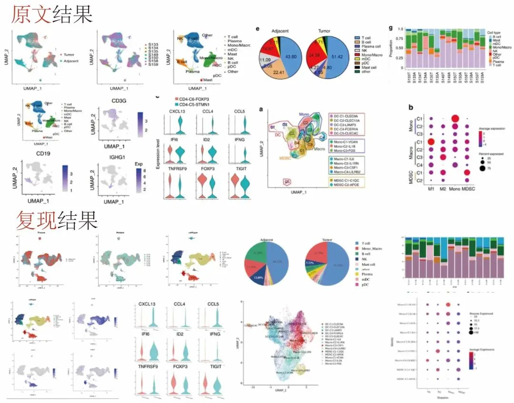
详细教程可加群交流
点击下方链接抢先 注册，即刻赶超 同行，率先 发文：
https://seeksoul.online/index.html#/login?from=Biomamba
扫码 添加客服(备注Biomamba有优惠)，参加云平台精彩活动 （文末可了解活动详情）～
群聊二维码过期可添加客服：

扫一扫 添加客服
文献背景
标题： Immune suppressive landscape in the human esophageal squamous cell carcinoma microenvironment
中文标题： 人类食管鳞状细胞癌的免疫抑制微环境
期刊： Nature Communications
影响因子： 16.6
DOI： 10.1038/s41467-020-20019-0
分析路线和结果
方向： 肿瘤免疫
数据来源： GEO数据库 GSE145370
分析方案：
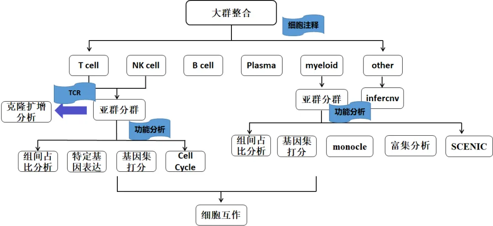
该文章通过单细胞RNA测序 对7例 食管鳞状细胞癌患者的癌/癌旁组织分析，绘制其免疫细胞图谱，研究发现：
1. 单细胞RNA测序揭示食管鳞状细胞癌(ESCC)的免疫细胞图谱，主要包括T细胞，NK细胞，单核细胞/巨噬细胞，树突状细胞（DC），B细胞，浆细胞和肥大细胞和其他细胞；
2. 对T和NK细胞亚型分析表征ESCC免疫微环境中T和NK细胞状态的改变；
3. T细胞受体(TCR)测序分析揭示了CD8 T细胞从预耗尽到耗尽的进展过程；
4. 髓系细胞的亚型分析表征ESCC中单核细胞/巨噬细胞和树突状细胞的不同功能。
文章结果
单细胞样本数据分析通常需要经过细胞/基因过滤→多样本整合→降维聚类等步骤的初步分析准备 ，因此在复现文章结果之前，在云平台上同样需要这些步骤的初步分析，让我们现在开始！
其中的分析原理 吧。下面我们就将分四个部分 进行详细地介绍。
01: 云平台分析前准备
Step1 上传文章样本数据
云平台分析前，我们需要将原文GEO数据库 GSE145370编号的单细胞数据下载到本地。通过【资源总览】下【我的数据】中将每个样本的rds数据文件上传到云平台上。 数据上传成功后，会在【我的数据】中看到上传的单细胞数据。
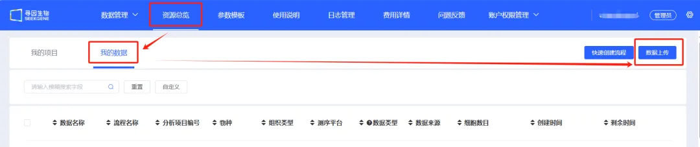
图1.1 通过【资源总览】→【我的数据】→【数据上传】上传文章数据
Step2 在云平台上新建项目
数据上传成功后，需要在【我的项目】下新建一个项目，后续的任何操作和结果都会呈现在该项目中。
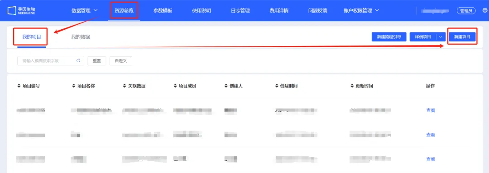
图1.2 点击【资源总览】→【我的项目】→【新建项目】构建新项目
Step3 新建分析流程
任何单细胞RNA数据进行细胞注释前均需要进行细胞/基因过滤→多样本整合→降维聚类等步骤对样本数据进行初步分析，用于评估样本的质量。
那么我们首先在新建项目下新建一个分析流程“多样本大群整合聚类”，填写流程名称，选择文章中的样本数据，点击开始分析。
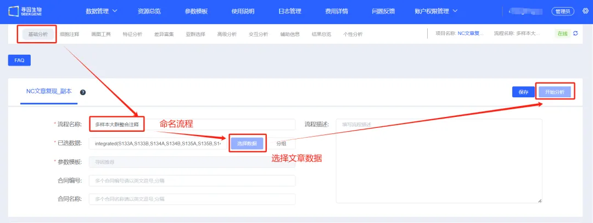
图1.3 填写流程名称→选择文章数据→点击开始分析
任务结束后，会展示每个样本的基因数、UMI数、线粒体基因数的小提琴图，可以用于评估样本的数量。
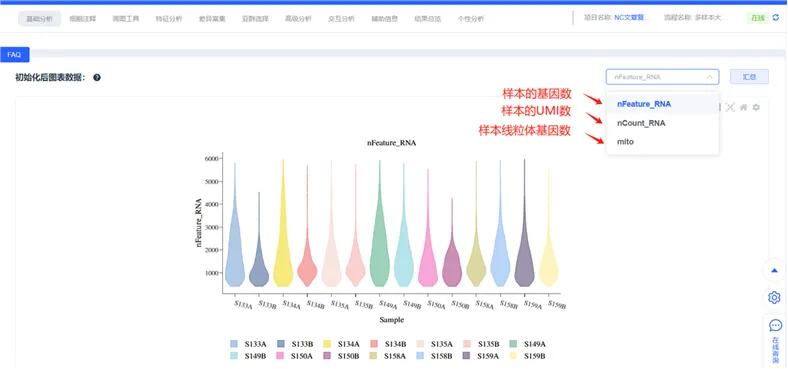
图1.4 每个样本的基因数、UMI数、线粒体基因数的小提琴图
Step4 按细胞/基因数过滤
上步分析完成后，可以获得nFeature_RNA、nCount_RNA和mito_RNA数评估样本质量。进入【过滤】步骤，过滤可分为按基因过滤和按细胞过滤两种，可以选择填写下图中的参数。点击【过滤】。
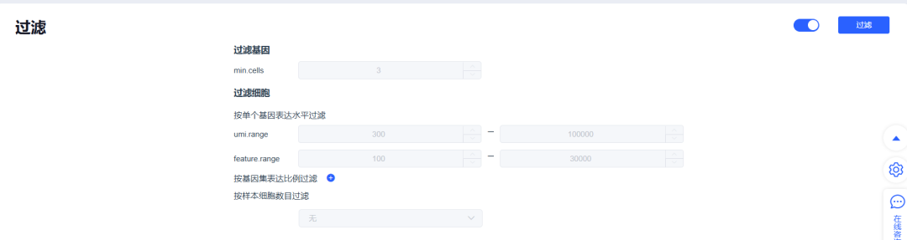
图1.5 填写过滤参数后，点击过滤，过滤掉不在参数范围内的细胞
Step5 多样本整合
数据过滤完成后，需要对数据进行多样本整合，去除样本间的批次效应，目前平台支持CCA、Harmony和Merge，其中merge不去除批次效应,CCA整合效果高，但可能出现过校正的结果，Harmony整合效果适中，这里选择Harmony的整合方案 ，点击【整合】按钮。
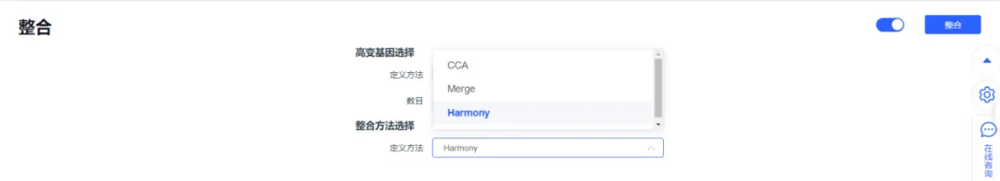
图1.6 选择Harmony方法，点击整合，实现多样本的整合
Step6 降维聚类
多样本整合完毕，会通过【聚类】步骤实现细胞聚类。具有相似基因表达模式或其他生物学特性的细胞会被聚集在一起，分辨率越高，细胞类群越多。按照下图中的参数设定，完成后点击聚类。初步分析已完成，跳转到【细胞注释】部分，可开始文章图表内容复现。
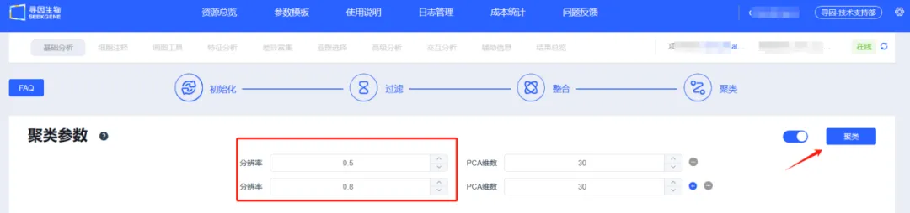
图1.7 填写相应的分辨率和PCA维数，点击聚类，实现细胞聚类
02: 文章细胞大群分析结果复现
聚类完成后会跳转到细胞注释页面，该界面可以根据每个细胞cluster中表达的marker来判定细胞类型，具体操作步骤如下：
Step1 细胞注释
初步分析完成后会跳转到细胞注释页面，左侧为聚类结果，共聚类到22个cluster。右侧展示每个cluster的top5 marker的气泡图、小提琴图和热图。根据每个cluster的marker基因来定义细胞类型，注释完成后，点击【新建注释】，输入相应的细胞标签完成细胞类型注释。
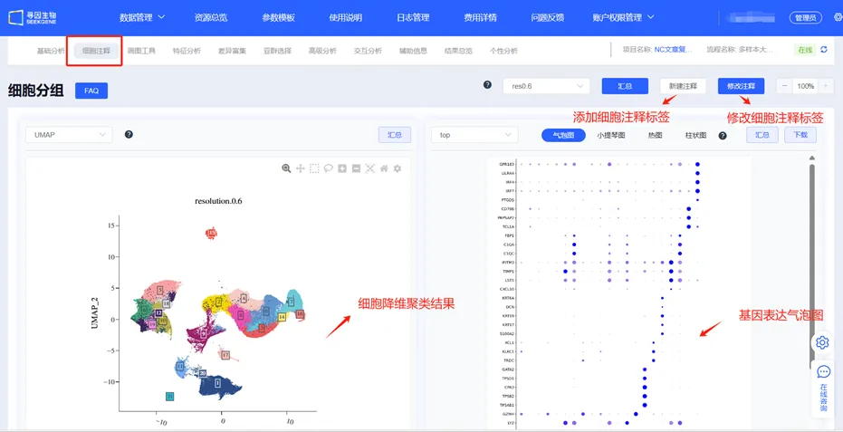
图2.1 云平台注释各种细胞类型
step2 复现结果比对
使用典型的marker对这些群体进行注释，并成功地鉴定了肿瘤浸润免疫细胞的主要类型，包括T细胞、NK细胞、单核/巨噬细胞、树突状细胞(DC)、B细胞、浆细胞和肥大细胞，以及一小部分非免疫细胞(图2.2)，对于细胞类型的umap降维图（按患者和按分组绘图）可以通过云平台的【画图工具】进行绘制和美化,文章图表的复现，大多数依据云平台的【画图工具】模块，后面会展开讲解。
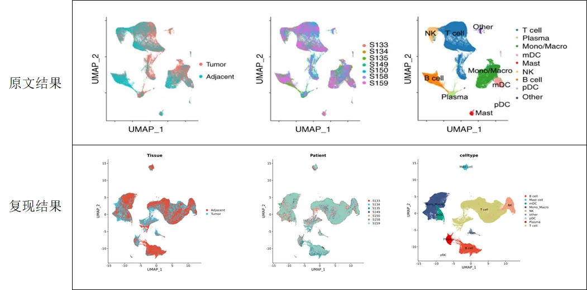
图2.2 云平台复现文献细胞注释结果，结果高度一致
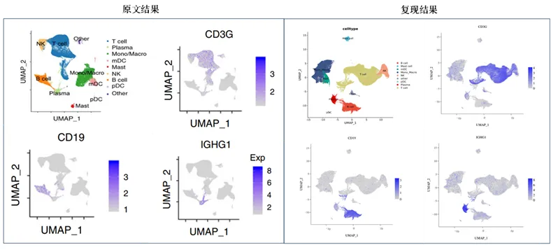
图2.3 云平台复现各细胞类群marker的featureplot图
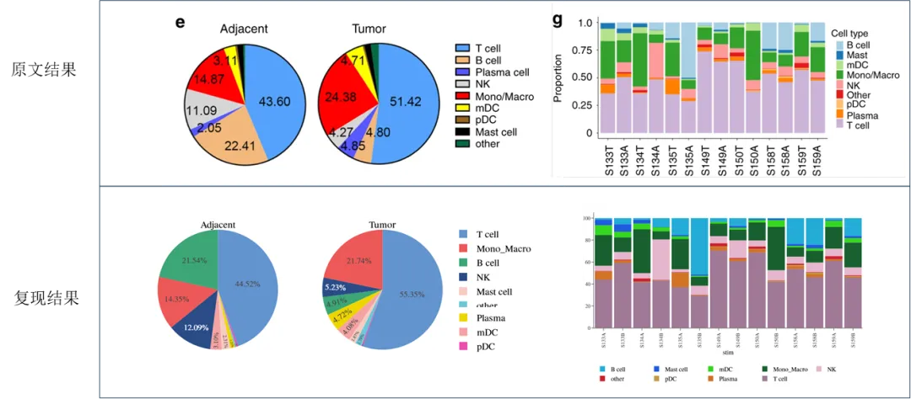
图2.4 云平台复现各细胞类群的细胞数量占比条形图和饼图
以上呈现的Uamp图、基因表达热图、小提琴图、气泡图、feature plot图以及占比图等均可以使用云平台【画图工具】模块完成。
例如复现按照癌/癌旁的样本分组的，选择云平台的【画图工具】模块，选择“分组统计图”，图形类型选择“饼图”，分组因子选择注释好的细胞类型结果，拆分因子选择“Adjacent和Tumor”的分组，提交即可绘制上述的细胞占比饼图。
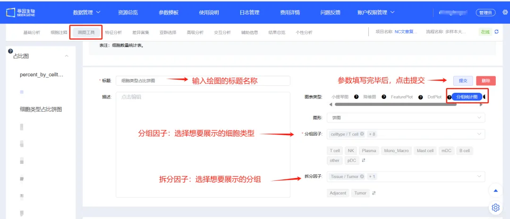
图2.5 云平台复现各细胞类群的细胞数量占比条形图和饼图的操作步骤
03: 文章T和NK细胞亚群分析结果复现
Step1 亚群选择筛选T和NK细胞
文章提及T 和 NK 细胞是 TME 中主要的细胞毒性免疫细胞，因此对T和NK细胞联合进行细胞亚群聚类和注释后，表征不同T细胞亚群在ESCC中行使的功能。
通过云平台复现该部分结果，首先需要通过【亚群选择】模块将T和NK细胞筛选出来，具体操作步骤如下：
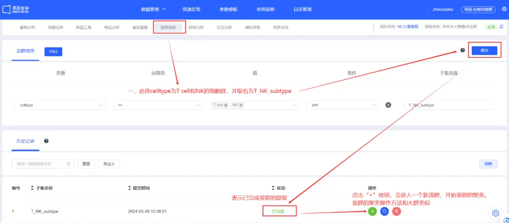
图3.1 点击【亚群选择】→填写T和NK细胞信息→点击提交→分析完成后点击+开始从头分析
注：该步骤相当把T和NK细胞筛选出来重新从质控分析，后续所有分析结果都基于T和NK细胞
Step2 T和NK细胞细胞亚群注释
通过已知的marker基因来注释CD4 T细胞群，包括naïve、记忆T细胞、效应T细胞、耗尽T细胞和Tregs。这些标记还可以识别CD8 T细胞群，包括记忆T细胞、效应T细胞、细胞毒性T细胞和耗竭T细胞(Fig2B)。
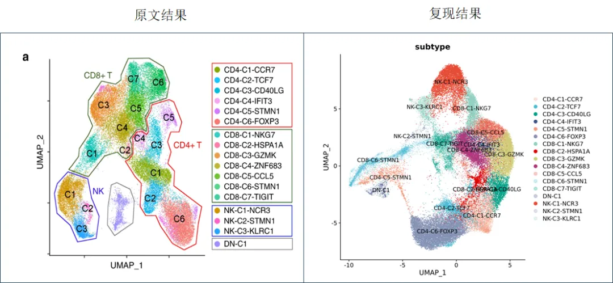
图3.2 云平台复现T细胞和NK细胞的注释结果
Step3 特征集打分分析
文章中同时对CD4和CD8 T细胞按照细胞毒性、耗竭、naïve和Treg特征富集发现CD4-C4-IFIT3富集细胞毒性特征，CD4-C5-STMN1富集在耗竭特征，CD4-C1-CCR7富集在naïve特征，CD4-C6-FOXP3富集在Treg特征。CD8T细胞同样（图3.4）。
云平台可以通过【特征分析】模块对基因集合进行打分，我们可以自定义基因集上传并保存。
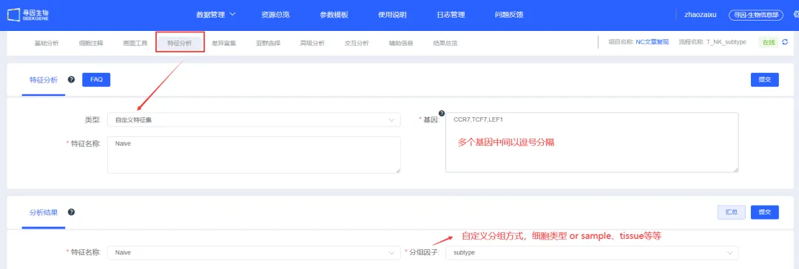
图3.3 找出文章附表的基因集数据，并将细胞毒性、耗竭、naïve和Treg的基因集建在云平台中
我们将公共的细胞毒性、耗竭、naïve和Treg特征基因集应用于CD4和CD8 T细胞簇，计算转录评分，结果发现在CD4 T细胞中，CD4-C4-IFIT3在细胞毒性特征上富集，CD4-C5-STMN1具有最强的衰竭信号，CD4-C6-FOXP3具有最强的Treg信号，CD4-C1-CCR7和CD4-C2-TCF7都具有较强的naïve信号。
在CD8T细胞中CD8-C1-NKG7是最活跃的细胞毒性CD8 T细胞， CD8-C5-CCL5和CD8-C6-STMN1的衰竭评分低于CD8-C7-TIGIT，而CD8 T细胞簇中naïve得分非常低，未发现naïve CD8 T细胞簇(图3.4)。这一结果表明，在ESCC中，大多数浸润肿瘤的CD8 T细胞处于活跃、记忆或耗尽状态。
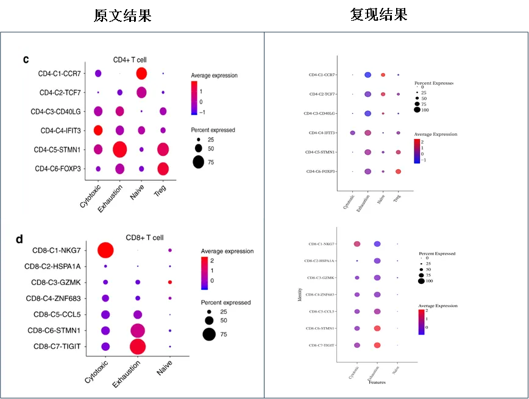
图3.4 云平台复现CD4和CD8 T细胞亚型的基因集打分
注：该气泡图通过云平台【画图工具】绘制，具体参数选择见（图3.5）
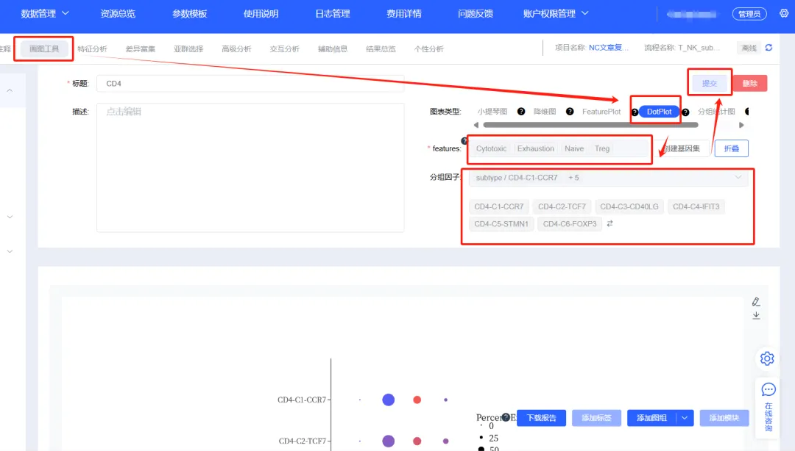
图3.5 CD4 T细胞的细胞毒性、耗竭、naïve和Treg特征基因集打分参数选择
Step4 CD4-C6-FOXP3与CD4-C5-STMN1的差异表达基因小提琴图对比
为表征ESCC中CD4和CD8 T细胞亚群的细胞状态和基因表达，文献中深入分析了CD4和CD8 T细胞亚群的基因表达。Tregs (CD4-C6-FOXP3)与CD4 细胞耗竭T(CD4-C5-STMN1)的基因表达较为相似，但深入比较发现CD4-C5-STMN1表达的CCL5、CCL4、IFI6、CXCL13、IFNG和ID2的水平高于CD4-C6-FOXP3。
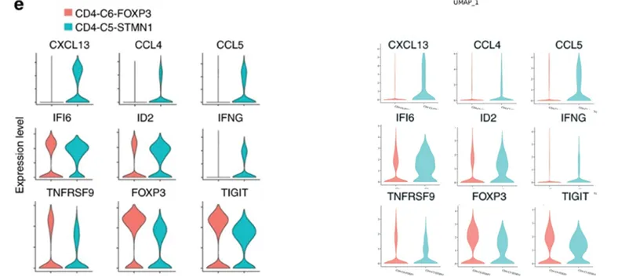
图3.6 云平台复现 CD4-C6-FOXP3与CD4-C5-STMN1的基因表达对比，结果高度一致
04: 文章单核细胞/巨噬细胞亚群分析结果复现
Step1 髓系细胞亚群选择
文献中对髓系细胞进行细胞亚群深入分析表征，同T细胞亚群分析类似，云平台通过“亚群选择”将髓系细胞提取出来，具体操作如下：
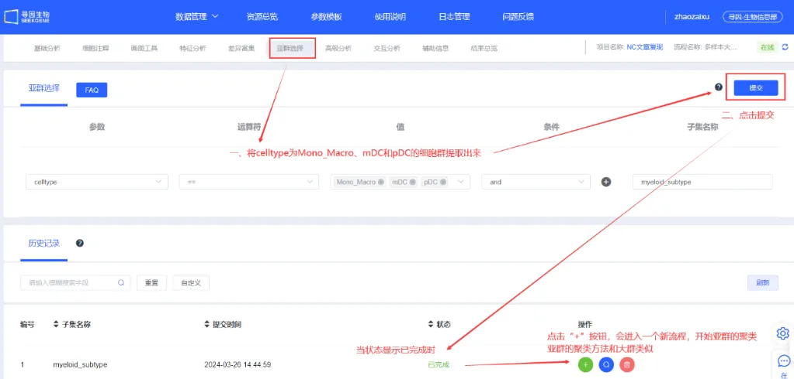
图4.1 点击【亚群选择】→填写髓系细胞信息→点击提交→分析完成后点击+开始从头分析
Step2 髓系细胞亚群细胞注释和基因集打分
完成后点击操作+按钮，进行细胞亚群聚类实现髓系细胞的亚群聚类，跳转到“细胞注释”模块。共鉴定出14个细胞簇，包括9个单核/巨噬细胞簇和5个DC细胞簇，利用公共的单核细胞、M1型巨噬细胞、M2型巨噬细胞和髓源性抑制细胞(MDSCs)的基因特征集，对这些髓系亚群进行功能分析(云平台【特征分析】模块)。Macro-C1-IL6，代表M1型巨噬细胞；Macro-C3-CSF1，代表M2型巨噬细胞；Macro-C2-IL1RN可能代表中间状态；Mono-C1-VCAN表现出强烈的单核细胞特征（图4.1）。
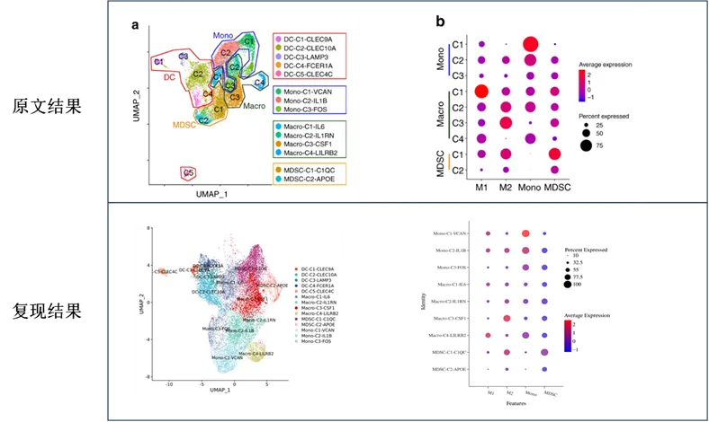
图4.2 云平台复现髓系细胞亚群umap图和特征集打分分析，结果与文章一致
Step3 髓系细胞亚群细胞拟时序分析
文献通过拟时序分析探究髓系细胞亚群的状态转变，云平台通过“高级分析”模块中的monocle2构建髓系细胞亚群的发育轨迹，具体操作如下：
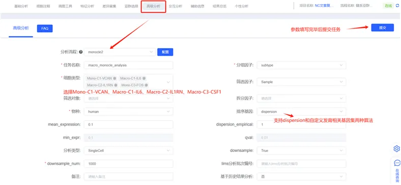
图4.3 云平台髓系细胞亚群细胞拟时序分析的参数填写
云平台分析结果显示单核细胞(Mono-C1-VCAN)、M1 (Macro-C1-IL6)、M2 (Macro-C3-CSF1)位于分支末端，Macro-C2-IL1RN位于分支中间，提示ESCC中巨噬细胞的极化现象，文献的拟时序分析结果基本一致（图4.4）。
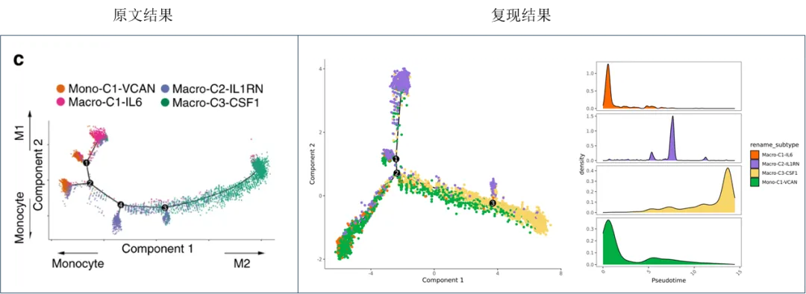
图4.4 云平台复现Mono-C1-VCAN/Macro-C1-IL6 → Macro-C2-IL1RN → Macro-C3-CSF1的拟时序分析
结语
由于篇幅有限，转录因子分析和肿瘤细胞判定等高级分析云平台也同样可以实现 ～如果有对以上复现内容有任何疑问，或者对我们的云平台分析感兴趣的小伙伴，可以添加文末客服微信咨询 哦～下方更有视频教学的链接，立即扫码观看，开启您的单细胞分析之旅吧！
视频教学链接：
https://space.bilibili.com/1209053733/channel/collectiondetail?sid=2881928&spm_id_from=333.788.0.0

扫码观看视频教程
云平台周年大促
此外，我们还准备了精彩纷呈的活动，让大家无需代码困扰，全心解决问题！
活动一：限时 3 折，600 元/例/2 年，限时疯抢！
活动二：活动期间文章发圈集赞20 个，立送4 例样本 1 个月免费 分析！活动参与截图，反馈给企业微信客服即可～
活动三：2024 年合作寻因自研单细胞产品，云平台已投入金额直接项目抵扣 ！
活动时间：2024年6月19日-7月7日
别再犹豫，赶紧扫码添加客服 咨询～抓住这难得机遇，尽情享受云平台的便捷与优惠吧！
扫码咨询客服
扫码进交流群

如何联系我们

 公众号后台消息回复不便，这里给大家留一下领取资料及免费服务器(足够支持你完成硕博生涯的生信环境)的微信号 ，方便各位随时交流、提建议（别问在么，添加时直接说来意）。此外呼声一直很高的交流群 也建好了，欢迎大家入群讨论：
公众号后台消息回复不便，这里给大家留一下领取资料及免费服务器(足够支持你完成硕博生涯的生信环境)的微信号 ，方便各位随时交流、提建议（别问在么，添加时直接说来意）。此外呼声一直很高的交流群 也建好了，欢迎大家入群讨论：
大家可以阅读完这几篇之后添加给生信入门初学者的小贴士 如何搜索公众号过往发布内容

 您点的每个赞和在看，我都认真当成了喜欢
您点的每个赞和在看，我都认真当成了喜欢